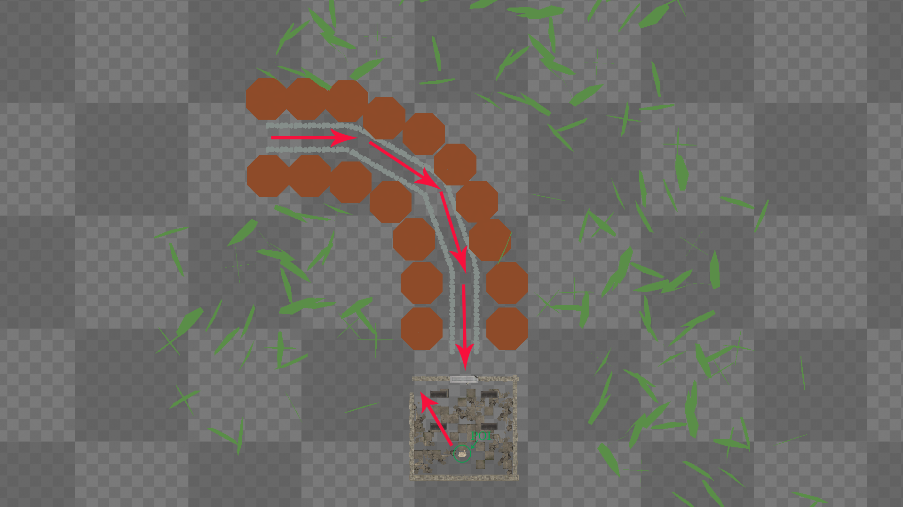
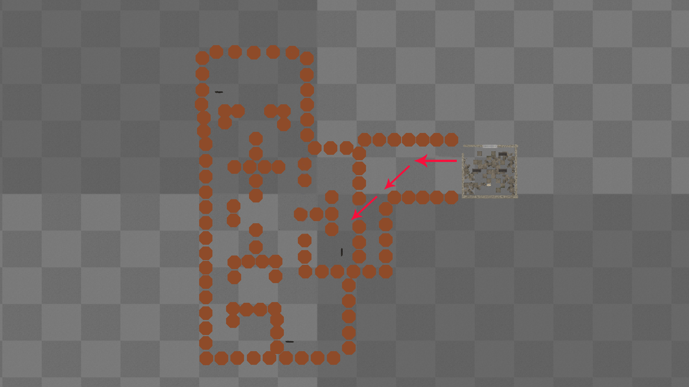
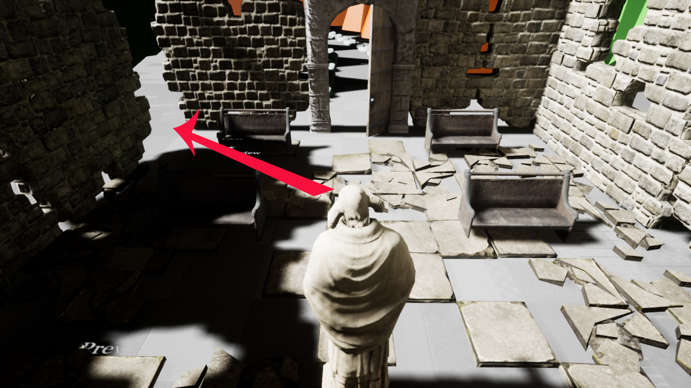
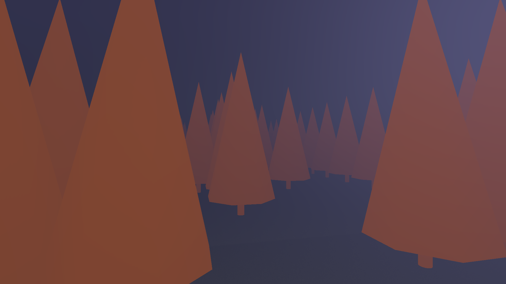

In this project I wanted to explore the techniques applied in Horror to see if I could replicate the same feeling of fear that I love to embrace when feeling scared, without relying on an overuse of “jumpscares” rather have a more sophisticated/ambiguous approach relying on environment and atmosphere to cause tension. I tasked myself with building a short horror experience that invokes an feeling of fear using setting, sounds and building tension. The goal is for the player to find lost tapes in a woods, which reveals what happened to a missing person. After each tape is found, the music becomes louder and the details of the tapes become more gruesome and hideous. The player is not alone in the woods and must avoid a vicious pack of wolves, and other potential dangers. Once all the tapes are found and the truth is revealed, a final chase sequence happens concluding the the experience and rising horror.
I set myself the task of:
-Producing a claustrophobic environment that feels somewhat intrusive and narrow fostering the feeling of 'no escape'.
-Create an interesting tension and release cycle that keeps the player interested throughout.
-Have an overarching threat/presence throughout.
In the initial segment of the game, the player follows a linear path which although set in a dark, dis-empowering Forest it does not feature any abnormalities, for example the trees are still green and there is no presence of danger. The player will follow the path until they find a ruined stone building, which upon entry will cause the door to slam and allow the player to explore the enigmatic interior of the building. Inside the building is the first cassette tape in the hand of a statue that the player can interact with. On doing so it reveals the first part of the song/narrative which sets the tone for the rest of the game. When finished the player can exit through a destroyed wall hinted to by the statue, this part of the Forest is significantly different to the first as is it features a combination of dead trees and overgrown twigs and roots. Changing the already uneasy environment to something worse and having the player aware that they cannot turn back due to the closed door establishes the feeling of dread. Contrary to typical mazes, the use of symmetry has been avoided, to encourage mistakes and wrong turns. When inside the maze, it is the players choice to move in whichever direction to find the remaining tapes.
Pacing in Horror works somewhat differently to other genres due typically relying on slow build up and pay off rather than frenetic shooters, or high speed racers. Horror relies on the build up to the scare just as much as it relies on the scare itself, Silent Hill is excellent for letting the player explore without anything actually happening, but rather let the players imagination do the work.
I wanted to capture that feeling by keeping the Horror subtle and not focusing purely on action moments.
The Wolves are the first type of enemy the player encounters, they patrol a set path around the maze and will chase the player if they step into their eye-line which is signified with a vicious growl. Ambient sound of the wolf patrolling is used so the player will hear the enemy before approaching linking back to the build up of tension as the player is aware something potentially hostile is in the area.
I have purposely positioned the Wolves near the cassette tapes so the player is forced to interact with them in order to progress in the game.
The final enemy is introduced in a cutscene after all the tapes have been found, the idea of this is to establish there is an even bigger threat than the wolves. After the final enemy has been introduced the wolves are no longer active due to them being killed, adding to the enigmatic presence of the final enemy as we can only assume it was him who killed them, but nothing is confirmed.
In the cutscene, the enemy just watches the player with a Micheal Myers 'voyeur' like approach, adding to the mystery of the stranger and leading to the question "how long has he been watching?" When the cutscene ends, the soundtrack stops which again, changes the world significantly from what the player has been accustom to. The empty sound is then filled with a second pair of footsteps and heavy breathing, indicating a new threat is moving.
The final enemy will follow the player everywhere unlike the wolves and relies on the sharp corners and the short depth of field due to fog in order to surprise the player.